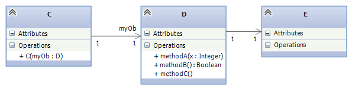
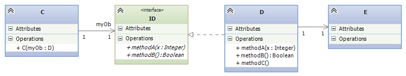
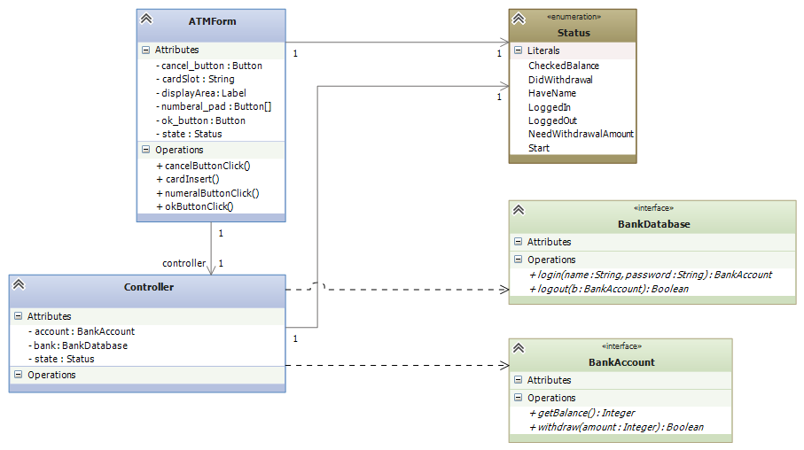
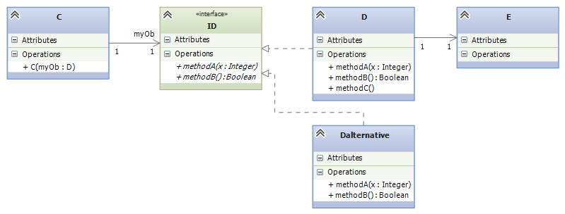
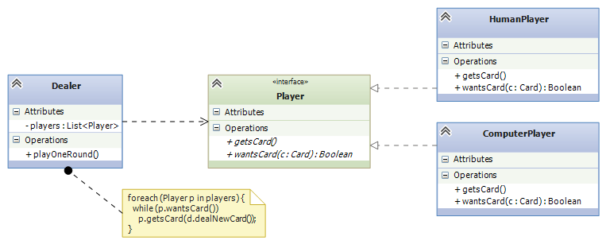
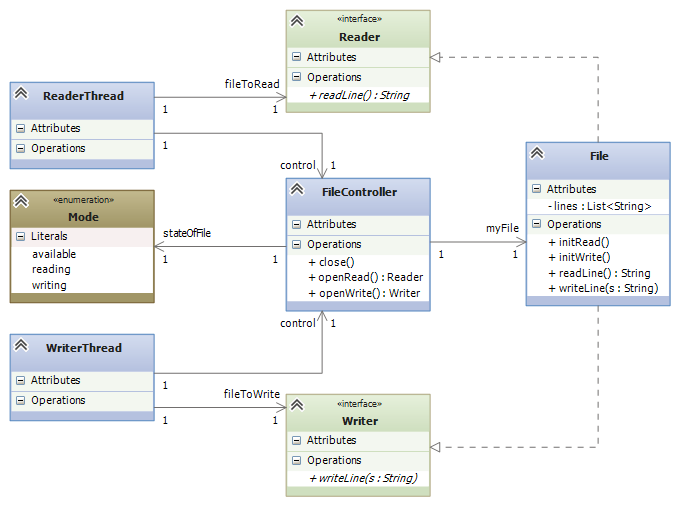
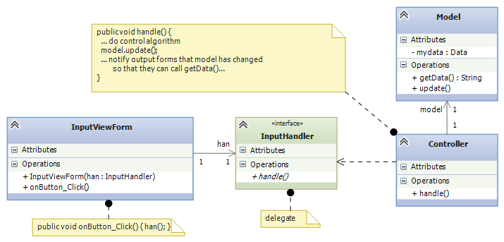
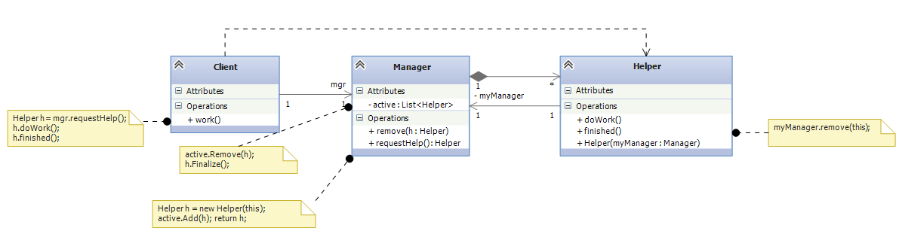
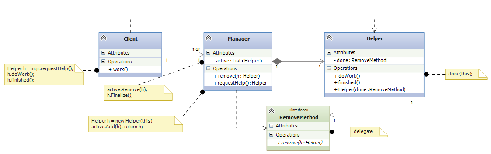

Course Notes — CIS 501: Software Architecture and Design, Fall 2014
In object-oriented programming, a design pattern is a solution scheme to a common architectural problem.
The text, Design Patterns: Elements of Reusable Object-Oriented Software by E. Gamma et al., Addison-Wesley 1994, is a famous text that popularized design patterns. Experienced programmers know most or all of the 23 patterns described in that text.
Over the next few weeks, we will study about 8-10 patterns from the Gamma book. (Many people call the text the “Gang of Four” book, because the book has four authors.) The patterns are also documented in Dr. Mizuno‘s CIS501 lecture notes. (Ask him where to buy a copy.)
The Wikipedia page on design patterns has a nice summary of the patterns in the Gamma book.
Design patterns are important to know, not only because they define important “programming tricks”, but because they define a “language” that software engineers use when they describe their systems to their colleagues (e.g., “In my subassembly, I used an Observer Pattern to update the views of my model”.)
Most design patterns use interfaces and delegates. We should review how these are used before we study any design patterns.
Interfaces are used in these ways:
All these examples are illustrated below.
A delegate can be considered an “interface” where there is exactly one method, so we don’t need to connect to a class that holds the method — we just connect to the method directly. In C, this is called a “function pointer”; in other languages (Lisp, Scheme, ML, Haskell, Python, Ruby, Scala), it is called a “closure”.
Here are reasons to use delegates:
Examples follow.
Many systems are first designed from classes only. But if several people or teams are coding the system, then the system should be divided into subassemblies — interfaces let us break the design into subassemblies that can be developed in at the same time, even at different paces.
Interface insertion goes like this. Say we have a design like:
and we wish to “cut” the design into two subassemblies, one holding class C and the other holding D and E. We insert an interface that lists the names of the methods in class D that are called by the code in class C:
Now, one team builds a VS Project consisting of class C and interface ID. The project can be written and unit tested. (We might write a simplistic “dummy class” that implements ID for the testing. At the same time, another team builds a VS Project consisting of class D, class E, and interface ID, such that public class D : ID, that is, C implements ID. That project is also written and tested. Later, we assemble the two projects and do “integration testing.”
Here is a concrete example of the technique: In the notes for state diagrams, we saw an example where an ATM subassembly was developed. The subassembly is supposed to link to the bank’s database, but it was not our job to design the database or even know what it will be. So, the subassembly is built to connect to interfaces to the bank’s database like this:
Later, the bank’s database and its accounts plug-into (implement) the two interfaces. In the meantime, we test the subassembly with dummy classes (“stubs”), such as:
public class DummyDatabase : BankDatabase {
private BankAccount a = new DummyAccount();
public BankAccount login(string name, string password) { return a; }
public bool logout(BankAccount b) { return b == a; }
}
public class DummyAccount : BankAccount {
private int balance = 100;
public int getBalance() { return balance; }
public bool withdraw(int amount) {
if (amount > balance ) { return false; }
else { balance = balance - amount; return true; }
}
}
Sometimes a subassembly is coded and saved in a library for later use (e.g., the components for GUI-building, or .NET’s general-purpose dictionary collection, or the back-end database of a server). An interface can be defined as the “entry point” into the subassembly.
Look at the previous diagram — the two interfaces used by the ATM assembly are “entry points” into a complex collection of classes that implement a database. There is no way that the authors of the ATM assembly want to read all the database’s classes and code, so the two interfaces, BankDatabase and BankAccount, act as simple entry points into the database assembly. The two interfaces, along with many other interfaces (for other means of entry) are included in the library of database components.
Such interfaces are sometimes called API s (Application Programming Interfaces). .NET uses lots of APIs to suggest ways that you can connect to their libraries.
If there are multiple components that are meant to be interchangeable, they should be defined so that each implements one and the same interface. The general idea looks like this:
The interface provides an opportunity to “unplug” class D from the system and replace it with a (better or new-and-improved) alternative, class Dalternative. Interfaces are often introduced into systems where there are several candidates for “plugging into” the system.
We saw an example early in the notes with the card game, where class Human and class Android are meant to be interchangeable and both implement interface Player:
Here’s the code for the interface, the two forms of Player, and a generalized Dealer:
// a Player is any class that has these two methods with
// the behaviors described in the comments:
public interface Player {
// wantsCard returns true when the Player wants another card:
public bool wantsCard();
// getsCard(c) adds Card c to the hand held within the Player:
public void getsCard(Card c);
}
// HumanPlayer is the computerized "proxy" for the human;
// it _implements_ (matches) interface Player:
public class HumanPlayer : Player { // READ THIS LINE CAREFULLY!
private HandOfCards h;
// ... other fields
public bool wantsCard() {
Console.WriteLine("Do you want another card?");
string answer = Console.ReadLine();
return (answer == "Yes");
}
public void getsCard(Card c) { h.add(c); }
// ... other methods
}
// ComputerPlayer is a computer card player; it also implements Player:
public class ComputerPlayer : Player {
private HandOfCards h;
... // other fields
public bool wantsCard() {
return (h.score() < 17)
}
public void getsCard(Card c) { h.add(c); }
// ... other methods
}
// dealer for a card game of Players:
public class Dealer {
private List<Player> players; // the players of the game
// we use the interface name as the "data type" of the players
private CardDeck d; // the deck of cards
// construct dealer: pl is a list of the Player objects
// that the dealer contacts
public Dealer(List<Player> pl) { players = pl; }
// plays one round of the card game with the players:
public void PlayOneRound() {
// ...
foreach(Player p in players) {
while (p.wantsCard()) {
p.getsCard(d.dealNewCard())
}
}
// ...
}
}
When a class has more methods coded in it than what are needed, we hide the unneeded ones behind an interface. Sometimes this is critical to ensure correct operation of a system. Here’s a concrete example: Say that a file is shared between a reader thread and a writer thread — the reader wants only to read the lines of the file, and the writer wants only to write lines to the file. But the file object has methods for both reading and writing!
To ensure that at most one thread can use the file at any time, and to ensure that the thread uses exactly the methods on the file that it requests to use, we introduce a controller class along with two interfaces that expose only the proper method(s) to each thread:
So, a ReaderThread asks the FileController for permission to read the File object, and the controller returns a handle to a Reader -typed object, so that only the object’s readLine method is available. In this way, the reader thread cannot abuse the file by calling writeLine. The same technique is used for the WriterThread.
In the previous example, the reader and writer threads used a file object, which they connected to via an interface of just one method. This makes sense, because a reader knows that it has a handle to a file object, but it plans only to read lines from the file. (Similar for the writer.)
Sometimes, an assembly will connect to another assembly and the first assembly does not know exactly what it is connecting to, and it does not care! If the connection is merely a method name, and the connection is merely a method call with arguments, then a delegate makes perfect sense to use.
This situation happens a lot with graphics forms — a graphic form collects some input data, which it sends forward for computation. The graphics form does not care if it talks to an “object” — it just wants to send the data. On the other end of the communication, the controller object is waiting for data to process, and it does not care if it receives the data from a GUI object, or via some other device/method. This situation is well suited for a delegate construction:
The delegate is critical when the graphics forms are written in a separate, custom language/tool that is incompatible with the language/tool that the controller uses. The only way of connecting the graphics to the controller is via function call (e.g., “RPC” — Remote Procedure Call). A delegate specifies the argument-answer structure of such a function call. Each assembly includes the delegate in its coding, ensuring that the two systems will communicate correctly.
When two classes’ methods call each other (that is, their links form a cycle), the design is likely flawed. Rather than merge the two classes into one, which will induce poor cohesion, we use a delegate to break the cycle.
In object-oriented programming, we might encounter a sequence of method calls like this:
This sequence can happen when a file object is opened, repeatedly read, and then closed. It also appears when a GUI Form calls a controller to do computation and then the controller calls the GUI back to tell it to refresh its display. And it happens when a data structure is told to update itself and then notify its “observer” Forms.
Here is a diagram that matches the above story, Steps 1-4: The Manager‘s requestHelp() method constructs a Helper that the Client calls to doWork(). When the Client is happy, it tells the Helper that it is finished() with it. The Helper calls back the Manager‘s remove() method, which causes the Helper object to be “deactivated” (and garbage-collected).
The cycle between Manager and Helper is awkward, and it exists only because the Helper must call the remove method at the end of its life. Admittedly, we might eliminate the cycle by making the Client call mgr.remove(h), but the call is not always natural for the Client to make.
Another solution for both Client and Manager is to use a delegate declaration so that the Helper is initialized with the method it should call when it is done with its work:
When a method needs a parameter that is itself a method, the type of the parameter is defined by a delegate. Here is an example: Say that we work a lot with arrays of ints, and we find that we are doing standard operations on the elements of the arrays — squaring each element, adding one to each element, replacing each element by zero, and so on. It is tedious to write this kind of code:
public void squareAll(int[] r) {
for(int i = 0; i < r.Length; i++) {
r[i] = r[i] * r[i];
}
}
public void incrementAll(int[] r) {
for(int i = 0; i < r.Length; i++) {
r[i] = r[i] + 1;
}
}
public void zeroAll(int[] r) {
for(int i = 0; i < r.Length; i++) {
r[i] = 0;
}
}
There is one underlying idea, that of performing an operation, f, on each element of the array. We define f as a delegate and write this useful tool, named mapAll:
delegate int ElementOp(int n);
public void mapAll(int[] r, ElementOp f) {
for (int i = 0; i < r.Length; i++) {
r[i] = f(r[i]);
}
}
Method mapAll defines the pattern of applying an operation to each element of an array. Now, when we have some operation, e.g.,
public int square(int n) { return n * n; }
We use it with mapAll like this: mapAll(r, square). Note: in C#, it is possible to do the previous line without naming method square; instead, we place the code body for square in the position of the second argument for mapAll as follows:
mapAll(r, n => n * n);
This note was adapted from David Schmidt's CIS 501, Spring 2014, Lecture 10 course note. © Copyright 2014, David Schmidt.